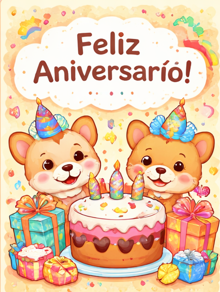

Feliz Aniversário Giovana!
Esse ano eu queria te fazer algo especial, mas não sabia como fazer algo que fosse bom o suficiente, então tentei fazer esse pequeno site até ter o seu presente. Primeiro agradecendo pelo privilégio da sua companhia todos os dias, sei que digo isso sempre, mas eu te admiro muito por diversos motivos, mas isso não é coisa para esse parágrafo, isso é apenas uma introdução. Pra ser sincero eu nem consigo me lembrar como nos aproximamos tanto, nem como era antes de virarmos amigos, assim como não consigo mais imaginar meus dias sem uma mensagem sua. Falar com você é sempre o ponto alto do meu dia, mesmo que pouco. Eu estou sempre torcendo por sua felicidade e seu sucesso, todos os dias, e por mais que eu possa desejar isso em dobro pra você hoje eu não sei se seria possível, porque eu sempre penso que você merece o melhor do mundo.